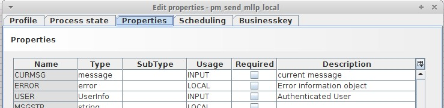
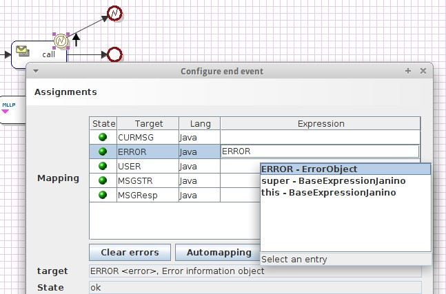

Error object

Topic content
Variables of type "error" internally are Objects of type emds.epi.decl.server.processengine.ErrorObject.
If you add an intermediate event of type error to an activity, then the intermediate event has an output
parameter named ERROR of type error which you can then use in the process model.
The error object provides these getter methods:
String getErrorCode()
returns the errorCode
String getErrorMessage()
returns the errorMessage
String toString()
returns "ErrorCode: [" + errorCode + "]\n" + "ErrorDetail: [" + errorMessage + "]"
ScenarioContext getScenarioContext()
returns the scenario context associated with the error. Only available when the creator of the error object has set it.
ScenarioContext is located in the package emds.epi.decl.server.event. A useful method will be getFullDescription().
ErrorContext getErrorContext()
returns the error context associated with the error. Only available when the creator of the error object has set it.
ErrorContext is located in the package emds.epi.decl.server.event. A useful method will be getFullDescription().
Message getMessage()
returns a Orchestra message associated with the error. Only available when the creator of the error object has set it.
The last three methods might return null, so in most cases you call getErrorCode() and getErrorMessage().
The two following methods are useful when assigning an error to the default process variable of type ErrorObject:
@param errorCode to fill in the error object
@param errorMessage to set as message for this error
@return the ErrorObject. Can e.g. be set in process variable
If the parameter is null a default Error is generated: new ErrorObject( "ERROR", "No detail message available", null, null );
@param errorObject, may be null
@return the old error or a default error
If a process model is created, a default local variable ERROR is also created:

If an intermediate error event is used, the ERROR object from the error event must be filled to the local variable from the process model:

See also End event Error